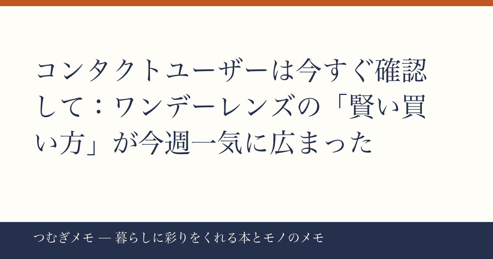

こんにちは、つむぎです。今週の楽天ランキングを眺めていたら、あるカテゴリの圧倒的な存在感に思わず二度見してしまいました。
この記事でわかること： ワンデーコンタクトレンズの「まとめ買い・比較選び」が今週のトレンドとして明確に浮上した理由と、目の健康を守りながらコストを抑えるための具体的な選び方。
今週の要点
- 楽天ランキングのトップ10に、ワンデーコンタクト関連商品が今週だけで7本ランクイン
- アキュビューオアシス・ワンデーモイスト・クレオ・シード・ティアモと、ブランドをまたいで「90枚パック2箱セット」形式が複数同時に上位を占めた
- カラコンも含めると合計9商品が同週に上位に集結、「コンタクト選びを真剣に考えるタイミング」がユーザー間で重なっていることがわかる
---
楽天ランキングのトップ10に、ワンデーコンタクトレンズ関連商品が今週だけで7本ランクインした。ブランドを列挙すると、ワンデーアキュビューオアシス（1位・4位・5位・8位）、ワンデーアキュビューモイスト（4位）、クレオワンデーUVモイスト（6位）、シードワンデーピュアうるおいプラス（7位）、さらにティアモクリアワンデー（3位）、カラコンのエバーカラーワンデー（8位）とシード系カラコン、アキュビューオアシス90枚パック2〜8箱セット（8位）と、異なるブランド・シリーズが横並びで話題になっているのは明らかに「偶然の一致」ではない。
なぜ今この時期に集中しているのか。 8月下旬という時期は、夏休みの外出が増えてコンタクトの消耗が速くなること、そして「秋の新生活・就活・学校再開」を前にストックを見直す動きが重なるタイミングだ。加えて「90枚パック×2箱」という形式が複数ブランドで同時上位に来ているということは、ユーザーが「1箱ずつ薬局で買う」スタイルから「3ヶ月分まとめて購入する」スタイルへと移行していることを示唆している。まとめ買いはコストメリットだけでなく、「ストックが切れた朝の焦り」というストレスそのものをなくす生活の質向上策でもある。
今日できること： まず自分の手元のコンタクトのストック枚数を数えてみる。残りが1箱（30枚前後）を切っていたら、今週のうちに「90枚パック×2箱」形式で次のロットを検討するタイミングと考えていい。
---
今週ランクインしたブランドは大きく分けてふたつの層に分かれる。「装着感・乾燥対策」を強みにするプレミアム系のアキュビューオアシスと、「コスパ×毎日使いやすさ」のシード・クレオ・ティアモ系だ。
アキュビューオアシスはレビュー件数1,297件〜1,420件・★4.69〜4.75と高評価を維持しつつ、今週だけで1位・4位・5位・8位と複数バリエーションが同時ランクインしている。長時間のPC作業や冷房の効いたオフィスで「夕方に目がしょぼしょぼする」と感じているユーザーに根強く選ばれていることが、この集中から読み取れる。一方、シードワンデーピュアうるおいプラスはレビュー3,555件・★4.84と今週ランクイン商品の中で評価の安定感が光る。96枚入り×2箱という枚数設定も「少し余裕があるほうが安心」という心理に合っている。
クレオワンデーUVモイストはレビュー3,294件・★4.78で90枚入り×2箱セット。UVカット機能が標準搭載されている点は、日差しの強い8月には実用的な訴求点になる。ティアモクリアワンデーはレビュー14,797件・★4.56と件数の多さが目を引き、「初めてネット購入する層が安心感を求めて選んでいる」動きが想像できる。
今日できること： Amazonで『コンタクトレンズの教科書』を見るのような目の健康にまつわる専門書を一冊手元に置いておくのもおすすめ。ブランドのスペック（含水率・酸素透過率）と自分の目の状態を照らし合わせて選ぶ習慣は、長い目で見て眼科代の節約にもなる。
---
今週の動向でもうひとつ見落とせないのが、カラコンのエバーカラーワンデーナチュラルがレビュー40,133件・★4.37というランキング内最多レビュー数を持ちながら8位に入っていた点だ。カラーコンタクト商品でレビューが4万件を超えているのは、このカテゴリでは突出した実績で、長期にわたる信頼の積み重ねが数字に出ている。
注目すべきは「ナチュラル」という名称で、発色を主役にするカラコンではなく、「つけているかどうか分からない自然さ」を求めるニーズが支持されている点だ。コロナ禍以降、マスク生活→マスクオフのタイミングで「目元だけで印象を作る」意識が高まったという流れを経て、今は「盛りすぎない・でも素のままでもない」中間の美意識が定着している。クリアレンズとカラコンの両方が同時に上位に来ているのは、「使い分けるのが当たり前」という層が増えていることの反映かもしれない。
今日できること： カラコンを試してみたいけど何を選べばいいか分からない、という人は、まず「ナチュラル系・BC(ベースカーブ)8.6または8.8」「含水率50%以下の低含水タイプ」を最初の基準にしてみると選択肢が絞りやすい。必ず眼科での処方・フィッティング確認を前提にすること、これは省略できないステップだ。
---
Q. ワンデーを90枚パック×2箱でまとめ買いするのは衛生面で問題ない？
A. ワンデーコンタクトは個別に密封包装されているため、未開封のまま正しい場所（直射日光・高温多湿を避ける場所）に保管する限り、使用期限内であれば衛生面の問題はない。購入時に必ず使用期限（EXP）を確認して、期限内に使い切れる量を計算して購入するのが基本だ。
Q. 同じ「90枚パック」でもブランドによって価格差が大きいのはなぜ？
A. 主な差は含水率・酸素透過率・UVカット機能・保湿成分の種類によって生じる。アキュビューオアシスはシリコーンハイドロゲル素材で酸素透過性が高く製造コストが上がるため、価格帯も高くなる傾向がある。シードやクレオはHEMA素材（従来型ソフトレンズ）ベースで、毎日快適に使えるコスパを強みにしている。「どちらが良い」ではなく、自分の目の状態と生活スタイルに合わせて選ぶのが正解だ。
Q. コンタクトと一緒に目のケアで気を付けることは？
A. 「コンタクトを外した後の人工涙液の点眼」「1日の装用時間を守る（ワンデーは基本的に16時間以内が目安とされることが多い）」「疲れを感じたら無理をせずメガネに切り替える」の3点を習慣にするだけで、長期的な目の疲労感はかなり違ってくる。生活習慣に関するガイドラインの詳細は眼科医に確認を。
---
今週のランキングを見ていて感じたのは、「コンタクト選びはもはや薬局の前で悩むものじゃなくて、じっくり自分のライフスタイルに合わせて戦略的に選ぶもの」という感覚がユーザーの間に広まっているということ。7〜9商品が同時に上位に来るような週は滅多にないので、今週の動きはそのシフトを象徴していたと思う。
目は毎日使う大切な器官なので、コストを下げることと目を守ることのバランスを崩さない範囲で、賢い選択をしていきたいですね。
なお、このブログ「つむぎメモ」はAIと一緒に運用している実験的なメディアです。毎週のランキングや再生数といったリアルタイムの数字をもとにトレンドを分析しながら、「暮らしをちょっと豊かにするヒント」を届けることを目標にしています。感想やリクエストはX（@tsumugi_memo15）まで気軽に送ってください。
📚 目次へ